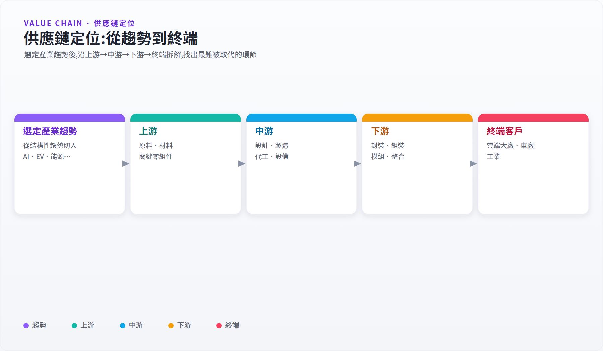
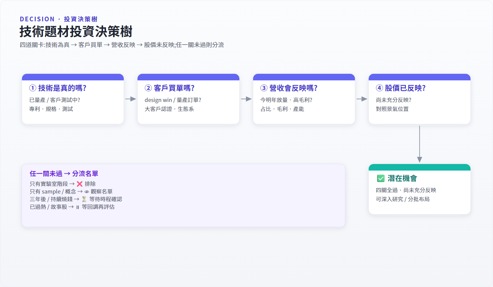

Serenity 式產業研究流程¶
來源：Serenity / aleabitoreddit 公開社群貼文。本頁在原始框架基礎上加入台廠研究與量化操作適配說明；若有原始貼文連結，請補至此處作為出處引用。
這篇整理的是 Serenity / aleabitoreddit 那種「unknown bottlenecks / 未知瓶頸」研究法。
它不是先問哪支股票會漲，而是先拆解產業，找出需求爆發時最可能卡住、最難被替代、但市場還沒充分理解的供應鏈環節。
最簡化公式：
大需求 × 小供給 × 難替代 × 低認知 × 時程接近 = 潛在瓶頸機會
反過來，若只是「大題材 × 高估值 × 沒營收 × 沒客戶 × 時程很遠」，比較像故事股，而不是真正的咽喉點。
Step 1：先選大趨勢，不先選股票¶
一開始研究的是產業趨勢，而不是股票代碼。可從下列題目開始：
- AI 資料中心
- CPO / 矽光子
- 先進封裝
- HBM
- 電力設備 / 液冷
- 機器人
- 核能 / 小型模組化反應爐
- 邊緣 AI
- 低軌衛星
- 半導體設備
核心問題：
- 為什麼這個產業現在開始重要？
- 是什麼需求在推動它？
- 這個需求是短期題材，還是結構性變化？
- 主要客戶是誰？
- 這個趨勢會持續幾年？
例：AI 光通訊的大趨勢是 AI 模型越來越大、GPU 數量越來越多，資料中心內部高速傳輸逐漸成為瓶頸，因此光通訊、矽光子與 CPO 開始變重要。
Step 2：畫出供應鏈地圖¶
把產業拆成：
- 上游：原料、材料、關鍵零組件
- 中游：設計、製造、晶圓代工、設備
- 下游：封裝、組裝、模組、系統整合
- 終端客戶：雲端大廠、伺服器廠、車廠、工業客戶等
以 AI 光通訊為例：
- 上游：InP 基板、雷射光源、微透鏡、光纖陣列、SOI / 特殊基板
- 中游：矽光子代工、DSP / 類比 IC、光學中介層
- 下游：光模組、CPO 封裝、測試設備、網通設備
- 終端：Microsoft、Google、Meta、Amazon、NVIDIA 生態系、交換器 / AI 伺服器廠

Step 3：找出最難被取代的環節¶
不是每個供應鏈位置都有投資價值。要問：
- 這個環節是不是技術門檻高？
- 供應商是不是很少？
- 客戶認證是不是很久？
- 產能是不是很難快速擴張？
- 產品是不是一旦缺貨，整個系統就不能出貨？
- 大公司能不能輕易自己做？
- 中國廠商能不能快速用價格戰打爆？
真正有價值的瓶頸通常具備：
- 少數公司能做
- 良率或量產很難
- 客戶驗證時間長
- 技術替代方案少
- 需求成長速度快於供給成長速度
- 單價佔終端成本小，但缺了就不能出貨
Step 4：分清楚「現在瓶頸」與「下一代瓶頸」¶
Serenity 式研究不只看現在最熱的公司，也會問下一輪瓶頸在哪裡。
以 AI 光通訊為例：
- 現在瓶頸：800G / 1.6T 光模組、EML 雷射、高速 DSP、pluggable optics
- 下一輪瓶頸：CPO、矽光子、CW DFB 雷射光源、光學封裝、測試設備、微透鏡 / 光纖陣列、新型基板材料
投資含義：
- 現在瓶頸：營收較快反映，但股價可能已經漲很多。
- 下一代瓶頸：想像空間大，但放量時間不確定，可能等很久。
公司可初步分類為：
- 已經受益
- 即將受益
- 可能受益
- 只是概念沾邊
- 市場誤會它會受益
Step 5：用「技術 → 客戶 → 營收 → 股價」四層驗證¶

技術是真的嗎¶
- 公司真的有這個技術嗎？
- 是實驗室技術，還是已經量產？
- 有沒有專利、論文、產品規格、客戶測試？
客戶買單嗎¶
- 有沒有 design win？
- 有沒有大客戶認證？
- 是 sample、pilot，還是量產訂單？
- 客戶是否屬於 Microsoft、Google、Meta、Amazon、NVIDIA 生態系等關鍵買方？
營收會反映嗎¶
- 這個產品佔營收多少？
- 毛利率如何？
- 產能能不能放大？
- 公司會不會為擴產大量燒錢？
- 放量時間是今年、明年，還是三年後？
股價是否已經反映¶
- 市值多大？
- 本益比 / 本銷比是否合理？
- 市場是否已經知道這個故事？
- 最近漲幅是否已經過熱？
- 如果故事延後一年，股價撐不撐得住？
重要提醒：技術可能是真的，但時程太早、股價太急，仍可能成為失敗交易。
Step 6：建立固定資料來源¶
公司資料¶
- 10-K / 10-Q / 年報 / 季報
- Investor Presentation
- Earnings Call Transcript
- 公司新聞稿
- 產品規格書
- 客戶案例
- 專利 / 技術白皮書
產業資料¶
- Yole
- LightCounting
- Dell’Oro
- Omdia
- TrendForce
- SemiAnalysis
- TechInsights
- IEEE / Nature / arXiv
- OFC、Hot Chips、ISSCC、IEDM、SC Conference
供應鏈線索¶
- 大客戶 CapEx
- NVIDIA / Broadcom / Marvell / Arista / Cisco 說法
- Microsoft / Meta / Google / Amazon 資本支出
- 台積電法說
- Coherent、Lumentum、Fabrinet、AAOI、Innolight 等法說
- 交期、缺貨、擴產、認證進度
市場資料¶
- 股價相對強度
- 營收 YoY / QoQ
- 毛利率變化
- 訂單 backlog
- 分析師預估修正
- 放量前後的價量行為
Step 7：質化找題材，量化管進出¶
對偏量化與動能交易的交易者，Serenity 式研究可作為「題材與股票池生成器」，再用量化方法處理進出場與風控。
質化研究建立股票池¶
每個股票池標記：
- 供應鏈位置
- 受益邏輯
- 瓶頸程度
- 放量時程
- 主要客戶
- 主要風險
量化過濾強勢標的¶
可觀察：
- 3 個月 / 6 個月相對強度
- 突破 52 週高
- 成交量放大
- 營收成長加速
- 分析師預估上修
- 財報後跳空
- 族群強度
被動元件適配：量化過濾條件¶
針對台股被動元件週期股，建議以下量化邏輯與質化股票池搭配：
進入觀察名單（質化條件滿足後再做量化確認）
- 月營收 YoY 連續 2 個月 > +10%（排除單月工作天或基期效應）
- 毛利率 QoQ 改善 > 2%（ASP + 稼動率同步改善的訊號）
- 股價站上 MA60，且 MA20 開始走揚
進場確認（技術面同步）
- MA20 > MA60（多頭排列確認）
- 成交量放大（相對 20 日均量 > 1.3 倍以上）
- 月 KD 黃金交叉
風控 / 出場
| 觸發條件 | 動作 |
|---|---|
| 收盤跌破 MA20 | 減半部位（故事可能延後） |
| 收盤跌破 MA60 | 全部出清（景氣轉折訊號） |
| 法說下修（ASP 繼續跌、庫存繼續升） | 不等技術面，直接出清 |
| 財報前一週且無明確驗證 | 降至半倉以下 |
不進場的紅旗訊號
- 月營收 MoM 連續 2 個月負成長（去庫仍在進行）
- 毛利率 QoQ 下滑 > 3%（ASP 跌幅大於稼動率改善）
- 同業（村田/TDK）法說語氣明顯轉保守
用風控處理故事不確定性¶
產業故事常常會延後，因此不能只靠信仰。可使用：
- 移動停損
- 分批進出
- 財報前降低部位
- 技術面破線退出
- 事件驗證失敗退出
- 只在產業與股價同時確認時加碼
入門練習題¶
建議從問題開始：
AI 資料中心裡，下一個比 HBM 和 CoWoS 更少人懂的瓶頸是什麼？
可先拆成 5 個候選方向：
- CPO / 矽光子
- 800G / 1.6T 光模組
- 液冷
- 電力設備
- 高速交換器 / Ethernet networking
每個方向做一頁筆記，回答：
- 這個東西解決什麼問題？
- 為什麼 AI 需求會讓它變重要？
- 供應鏈有哪些公司？
- 哪個環節最可能缺貨？
- 誰最難被取代？
- 目前市場是否已經反映？
- 有哪些明確風險？
- 股價有沒有開始驗證？
免責說明¶
本文是產業研究方法整理，不構成任何投資建議。文中提到的產業、公司或技術方向，主要用於說明研究框架；實際投資仍需自行驗證資料、評估估值、風險與自身資金配置。